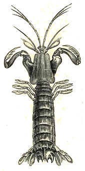
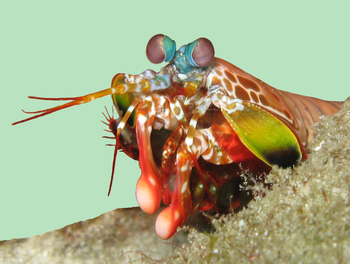

Facts about Mantis Shrimp
| Kingdom: | Animalia |
| Phylum: | Arthropoda |
| Subphylum: | Crustacea |
| Class: | Malacostraca |
| Subclass: | Hoplocarida |
| Order: | Stomatopoda |

Mantis shrimps, or stomatopods, are marine crustaceans of the order Stomatopoda. Some species have specialised calcified "clubs" that can strike with great power, while others have sharp forelimbs used to capture prey. They branched from other members of the class Malacostraca around 340 million years ago. Mantis shrimps typically grow to around 10 cm (3.9 in) in length. A few can reach up to 38 cm (15 in). The largest mantis shrimp ever caught had a length of 46 cm (18 in); it was caught in the Indian River near Fort Pierce, Florida, in the United States. A mantis shrimp's carapace (the bony, thick shell that covers crustaceans and some other species) covers only the rear part of the head and the first four segments of the thorax. Varieties range in color from shades of brown to vivid colors, with more than 450 species of mantis shrimps being known. They are among the most important predators in many shallow, tropical and subtropical marine habitats. However, despite being common, they are poorly understood, as many species spend most of their lives tucked away in burrows and holes. Called "sea locusts" by ancient Assyrians, "prawn killers" in Australia, and now sometimes referred to as "thumb splitters"—because of the animal's ability to inflict painful gashes if handled incautiously—mantis shrimps have powerful claws that are used to attack and kill prey by spearing, stunning, or dismembering.
Habitat

Mantis shrimp live in burrows where they spend the majority of their time. The two different categories of mantis shrimp – spearing and smashing – favor different locations for burrowing. The spearing species build their habitat in soft sediments and the smashing species make burrows in hard substrata or coral cavities. These two habitats are crucial for their ecology since they use burrows as sites for retreat and as locations for consuming their prey. Burrows and coral cavities are also used as sites for mating and for keeping their eggs safe.Stomatopod body size undergoes periodic growth which necessitates finding a new cavity or burrow that will fit the animal's new diameter. Some spearing species can modify their pre-established habitat if the burrow is made of silt or mud, which can be expanded.
Nuclear bomb of light and beauty.

While humans have three types of color-receptive cones, the mantis shrimp has SIXTEEN color-receptive cones.
Each compound eye is made up of up tens of thousands of ommatidia, clusters of photoreceptor cells. Each eye consists of two flattened hemispheres separated by parallel rows of specialised ommatidia, collectively called the midband. The number of omatidial rows in the midband ranges from two to six. This divides the eye into three regions. This configuration enables mantis shrimp to see objects with three parts of the same eye. In other words, each eye possesses trinocular vision and therefore depth perception. The upper and lower hemispheres are used primarily for recognition of form and motion, like the eyes of many other crustaceans.
The fastest hands in the ocean
The shrimp mantis has two raptorial appendages on the front of its body that accelerate with the same velocity as a gunshot from a twenty-two caliber rifle, and in less than three-thousandths of a second can strike prey with 1,500 Newtons of force.
Their limbs move so quickly the water around them boils in a process known as syoercavutation. When theses cavitation bubble collapse it produces an undersea shockwave that can kill prey even if the mantis shrimp misses its target.
The mantis shrimp's second pair of thoracic appendages has been adapted for powerful close-range combat with high modifications. The appendage differences divide mantis shrimp into two main types: those that hunt by impaling their prey with spear-like structures and those that smash prey with a powerful blow from a heavily mineralised club-like appendage.
A considerable amount of damage can be inflicted after impact with these robust, hammer-like claws. This club is further divided into three subregions: the impact region, the periodic region, and the striated region. Mantis shrimp are commonly separated into two distinct groups determined by the type of claws they possess:
- Smashers possess a much more developed club and a more rudimentary spear (which is nevertheless quite sharp and still used in fights between their own kind); the club is used to bludgeon and smash their meals apart. The inner aspect of the terminal portion of the appendage can also possess a sharp edge, used to cut prey while the mantis shrimp swims.
- Spearers are armed with spiny appendages topped with barbed tips, used to stab and snag prey.
To see this animal in action, check this video.